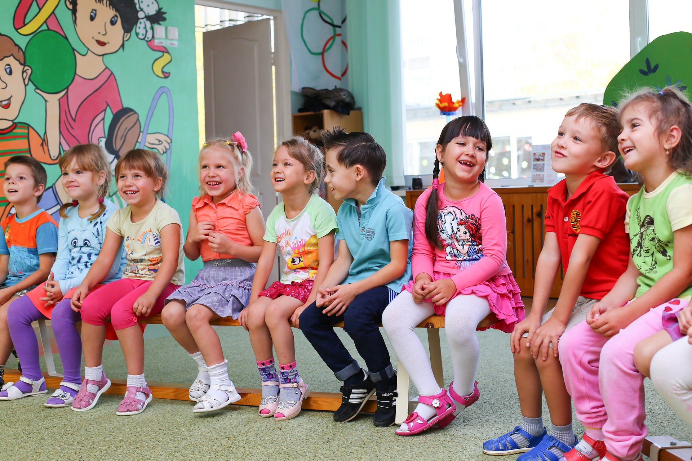
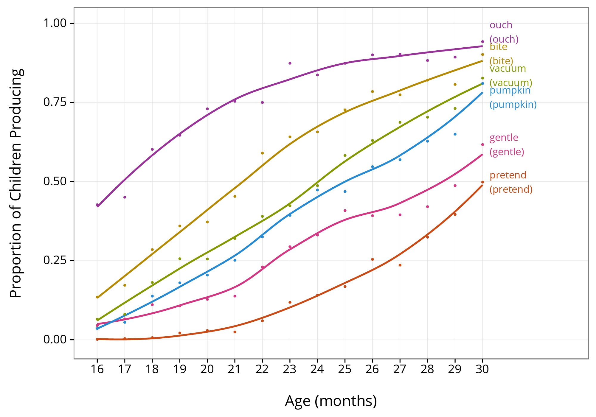
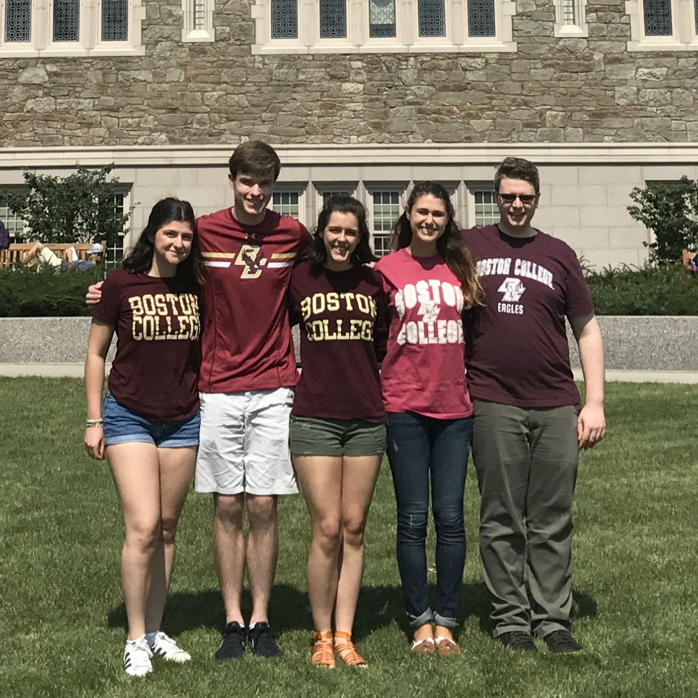

Our Research

Children know thousands of words by the time they enter kindergarten. This vocabulary provides a foundation for learning and development in elementary school and beyond. The more we know about how, when, and why children learn words, the better we can help children reach their full potential. Understanding typical development also enables us to better identify children who may need extra assistance.
Scientists have an increasingly clear picture of vocabulary growth during toddlerhood. Projects such as the MacArthur-Bates Communicative Development Inventory have vastly increased what we know about how children learn words. This data can be illustrated with tools like the WorkBank App, which was created by Michael Frank and colleagues. The graph below, created using that tool, shows that children learn words in a variety of different domains at predictable ages. Some words, like 'ouch,' are acquired by nearly every child by the age of 30 months, but others such as 'pretend' are only acquired by about half of children by that age.

Despite the extensive research on vocabulary development conducted so far, we still know very little about vocabulary development after 30 months. In the Vocabulary Project, we aim to address this gap by examining vocabulary development in children ages 3 to 6. We are currently looking for small groups of students to participate in a 3- to 7-minute study, conducted by our Institutional Review Board-certified research assistants. This study is part of a series in a long-term project investigating vocabulary development in young children.
One of our current studies involves reading stories with children and checking their understanding by having them help to "teach" a puppet who is just starting to learn to talk. By correcting the puppet when it makes errors, we can track how students develop verbs related to intentions and states of mind across this age range. Here is an example page of a story from this study:
After we read the page, the puppet will say what he thinks happened in the story and then students have a chance to indicate whether they think he is right or wrong, checking whether they understand the main verb in the story. These stories are designed to be fun and engaging games for children in this age range, and we've seen that they generally enjoy participating in our studies.
Meet Dr. Hartshorne

The principal investigator of the Language Learning Lab is Dr. Joshua Hartshorne. He is an assistant professor in the Boston College Department of Psychology. Dr. Hartshorne received his Ph.D. in psychology at Harvard University and did his post-doctoral research at MIT with Josh Tenenbaum. Dr. Hartshorne is interested in what allows humans, especially children to learn language, applying new and emerging methods to core problems in the language sciences.
For more information on Dr. Hartshorne and his research interests, please see this page.
Meet Our Research Team

The research team consists of lab manager Lauren Skorb and several experienced and enthusiastic undergraduate students. All of our research staff have passed background checks, completed Human Subjects Research ethics training, and have been approved by the Institutional Review Board.
Learn More about L3
Want to learn more about what the Language Learning Lab is up to? Check out our Research page, our newsletter, and Games with Words, where we have online studies that adults can participate in right from their own computers!